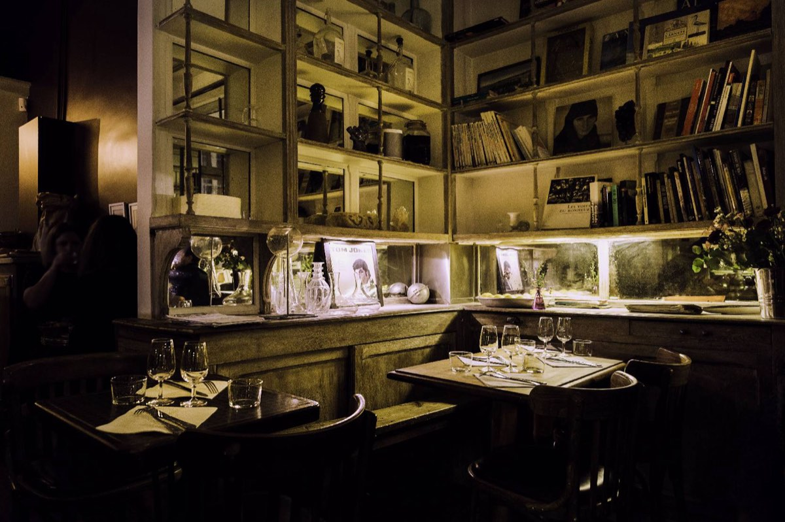

Franse tapas · natuur- & orange wijnen · di–za 19:30–23:00
Reserveer een tafel
In a former candy shop turned cabinet of curiosities, 100 metres from Place de Clichy, Franquette creates Tapas op z’n Frans with cosmopolitan accents: products that are good, clean and fair, chosen from producer friends, in the Slow Food spirit.
In the cellar: natural wines, orange and macerated wines, lovely bubbles and regional gems, to share in a festive atmosphere.
Reserveer nu8 rue des Dames
75017 Paris
Routebeschrijving
Dinsdag – zaterdag
7:30pm – 11:00pm